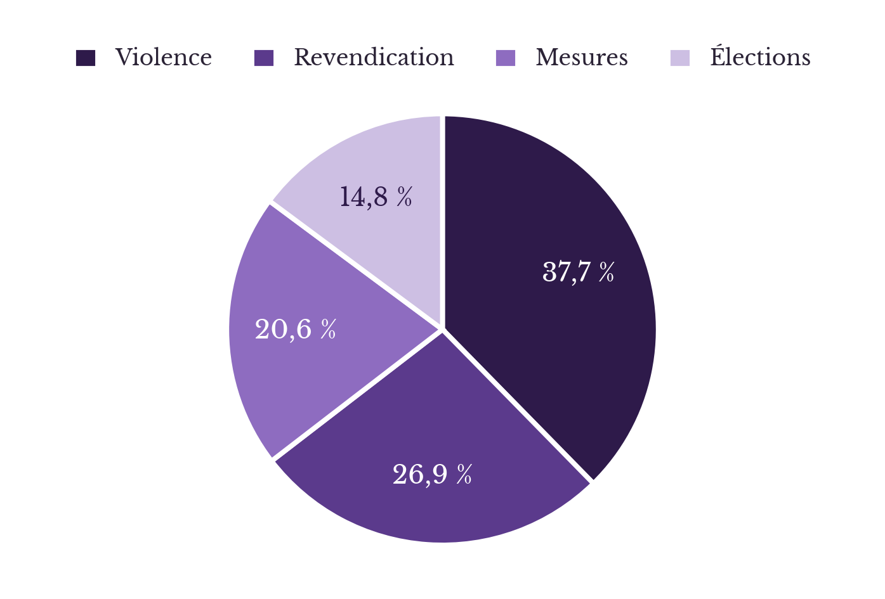
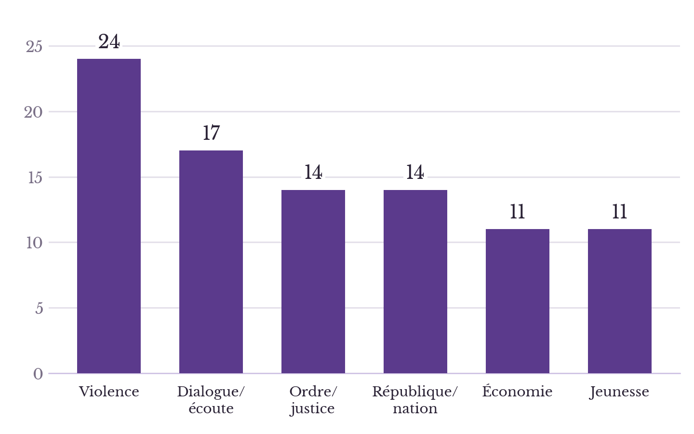

Décryptage du discours présidentiel du 18 octobre 2026
Analyse des mécaniques discursives du Président face aux manifestations lycéennes et réflexion sur ses implications démocratiques
Le discours présidentiel du 18 octobre 2026
À vingt heures ce samedi 18 octobre 2026, le Président de la République française s’est adressé solennellement aux Françaises et aux Français dans un discours de 8 minutes et 35 secondes1, en réponse aux agitations qui durent depuis bientôt une vingtaine de jours et à la suite de la journée d’extrême violence que fut le 17 octobre 2026 ; on compte en effet 2000 interpellations, 600 policiers, gendarmes et sapeurs-pompiers blessés2 ; un incendie à l’hôtel de ville de Limoges3 ; à l’office de tourisme à Lyon4 ; des intrusions dans la mairie de Marseille et les locaux de la police municipale ; dans la résidence du préfet de Bordeaux ; mais aussi, un jeune de 17 ans qui voit sa main arrachée5 ; une adolescente du même âge qui perd un œil…
Blocages lycéens et violences : le contexte de la mobilisation
Cette allocution présidentielle, on la rappelle, s’inscrit dans le mouvement lycéen débuté mi-septembre sous la forme de blocus devant les établissements scolaires. D’abord initiées à Paris, les manifestations s’étaient étendues à l’ensemble de la France : Lille, Lyon, Marseille, Nice, Nantes, Rennes, Bordeaux et Tours1. Les revendications portaient notamment sur davantage de moyens humains et matériels pour l’Éducation nationale, avec un remplacement plus systématique des enseignants absents, des classes moins chargées, des emplois du temps allégés, des bâtiments décents et une réforme de Parcoursup, jugée trop opaque et anxiogène. Les attentes étaient donc importantes, la réponse politique apportée par le Président de la République est-elle suffisante ? Quel regard va-t-il porter sur les évènements de la semaine ? Nous nous proposons donc dans cet article d’analyser le discours présidentiel. Le ton militant est assumé.
« Ceux qui […] vous expliquent que l’urgence est […] de manifester n’ont qu’un but. Abîmer la République »
Cette phrase vient du Président de la République française. Ajouter à cela le rappel des élections à venir (« nous sommes à six mois de notre élection présidentielle ») n’est pas anodin, et traduit sans doute la volonté de différencier d’un côté une démocratie légitime, qui passerait par le vote, et de l’autre une démocratie sauvage, dont les revendications sont criées et portées dans les rues : « Et donc tous ceux qui aujourd'hui vous expliquent que l'urgence est d'aller dans la rue, de manifester, de créer le désordre, n'ont qu'un but. Abîmer la République et voler le débat ». Notons que manifester, ce n’est pas « abîmer la République », ni « voler le débat » ; c’est au contraire en changer la focalisation, le recentrer ; montrer d’où il vient et l’ancrer dans une réalité tangible, l’espace public qui n’est plus l’espace politique (dans un article de Bruno Cautrès, « La démocratie en souffrance », 76% des personnages interrogées disent la démocratie « ne pas très bien fonctionner »). Par ailleurs, la manifestation est un droit républicain, validé par l’article 11 de la Convention européenne des droits de l’homme dont la France est signataire et rattaché par le Conseil constitutionnel à la Déclaration des droits de l’homme et du citoyen de 1789 depuis 1995. C’est la première des alternatives face aux « tyrannies de la majorité »6. Surtout, il est étonnant de constater que ce discours ignore, en rappelant l’échéance prochaine du vote, toute une partie de la population mobilisée (à commencer par la jeunesse lycéenne) qui est privée du droit de vote.
Les termes « factieux » et « ultra-gauche » dans le discours
Les relents conspirationnistes qui suintent du discours ont une allure inquiétante : la retenue (pour des motifs stylistiques, ou sous le prétexte de motifs stylistiques) dans les noms et les chiffres produit le flou et le vague7. Qui sont ces factieux d’extrême-gauche ? Qui sont « ceux qui aujourd'hui vous expliquent que l'urgence est d'aller dans la rue, de manifester, de créer le désordre » ? La France insoumise, selon Le Figaro8, ou l’Union étudiante, la Confédération paysanne, l’Union syndicale Solidaires, la Confédération générale du travail (CGT)9, l’Union syndicale lycéenne, l’UNEF, la FAGE, Sud Éducation, l’Intersyndicale VTC10, Gilets jaunes ? Ces syndicats, ou NPA-l’Anticapitaliste11, Révolution permanente12, Lyon Antifa, La Riposte Villeurbanne13, Contre-Attaque14 ? Ces groupes, ces médias, ou est-ce bien le Parti communiste français15 ? Le mouvement n’est pas issu d’un endroit ou d’un lieu ou d’un parti particulier, il demeure hétérogène dans son essence, même si l’on peut globalement le situer à gauche de l’échiquier politique, sur un terrain anti-libéral et anti-gouvernemental sans que cela soit une certitude. À ce titre, Ravelli, Siméant-Germanos, Bonin et Liochon, dans un ouvrage intitulé Les Gilets jaunes, une révolte inclassable, avaient souligné ce qu’ils appellent une « ambivalence artéfact », c’est-à-dire un positionnement flou, ni spécialement à gauche, ni spécialement à droite.
Couvre-feu et état d'urgence : le registre sécuritaire du discours
On peut se demander l’objectif de l’exécutif qui restera sans doute inconnu, néanmoins, si l’on s’interroge sur les effets que produisent le discours, alors on peut affirmer sans trop de risques qu’il fait rejaillir sur l’ensemble de l’opposition la responsabilité des émeutes et des casses. En désignant un ennemi intérieur abstrait, le discours associe à n’importe quel syndicaliste ou manifestant pacifique une menace quasi-terroriste ou anti-républicaine16 ; c’est la « paranoïa institutionnelle »17, qui justifie tout. Cette mécanique argumentative qu’analyse Loïc Nicolas dans L’évidence du complot : un défi à l’argumentation consiste en un refus de nommer (on trouve six occurrences de « plusieurs » dans le texte présidentiel, cinq occurrences de « nombreux », preuve de ce flou), dès lors, celui-ci crée un sentiment d’urgence et d’insécurité collective, car c’est bien au public de compléter le vide sémantique par ses propres hantises. Preuve que cela fonctionne, la peur cultivée par le parti présidentiel : les dégâts, d’abord, évoqués plus haut dans l’article, et le dispositif post-17 octobre mis en place par le gouvernement. Sébastien Lecornu parle de couvre-feux18, il évoque la possibilité d’un état d’urgence, mobilise tout un vocabulaire anxiogène, l’utilisation des blindés lors des manifestations à venir le 24 octobre, le recours à des unités d’élite et normalement réservées à la lutte anti-terroriste ou aux missions très spécifiques qui nécessitent un entrainement et un équipement particulier (GIGN, RAID, BRI)19, le déploiement de militaires de l’opération Sentinelle20 pour assurer une surveillance statique et libérer des policiers et des gendarmes. Emmanuel Macron parle « d’abîmer la République », il parle des rues de nos villes « saccagées ».
Temps de parole et mots-clés : ce que révèlent les chiffres du discours
En braquant le projecteur sur le désordre occasionné par les manifestations, le débat sur les motifs de la mobilisation est progressivement relégué à l’arrière-plan. Le discours présidentiel est structuré en huit sections, dont on exclura le traditionnel « Vive la République, vive la France ». Les paragraphes, du premier au quatrième, traitent des violences des manifestants, des groupuscules d’extrême-gauche, des dégradations et de la réponse judiciaire à apporter ; le cinquième et le sixième s’intéressent davantage aux revendications, notamment le prix du carburant et celles portées par la jeunesse ; le septième vise à présenter les mesures prises par le gouvernement pour répondre à ces revendications, et le dernier rappelle l’échéance prochaine des élections. Statistiquement, et comptabilisé en nombre de mots, la répartition est la suivante (chaque segment de couleur correspondant à une thématique) :


La violence occupe bien le premier plan, quel que soit le comptage, or rien « ne l’explique », rien ne la « justifie », rien ne « l’excuse ». Si les deux derniers termes sont plus ou moins discutables (quand la violence devient-t-elle justifiée ? justifiable ? Quand peut-on l’excuser ?), le premier, en revanche, l’est tout à fait. Car c’est une violence qui s’explique, au contraire : les travaux de Ted Gurr, dans Why Men Rebel sont une première clé de compréhension ; la « privation relative », c’est-à-dire l’écart entre ce que les individus attendent et ce qu’ils obtiennent, produit de la colère, du ressentiment, et dans certaines conditions, une violence collective. Loïs Wacquant, dans Urban Outcasts relie quant à lui les émeutes à la désindustrialisation, au chômage, à la ségrégation urbaine et à la stigmatisation des quartiers populaires. Il l’insère dans un processus symétrique, où la violence d’en bas répondrait à une violence venue d’en haut, structurelle, et dans certains cas, institutionnelles. Dans notre contexte, cette violence est-elle inexplicable ? Ce sera l’objet d’un prochain article.
Maintien de l'ordre et réponse pénale : les mesures évoquées
« L’État a le monopole de la violence physique légitime », disait Weber, et de fait, toute autre violence qui n’émane pas de l’État est illégale et doit être combattue. Mais les doctrines actuelles d’encadrement des manifestations n’ont pas toujours été telles quelles. Les travaux d’Olivier Fillieule et Fabien Jobard21 rapportent qu’entre les années 1970 et 1990, ce fut davantage une politique de dialogue et de mise à distance qui présidait au maintien de l’ordre. Ce n’est que dans les années 2000 et sous la présidence de Nicolas Sarkozy que la chose évolue avec une loi sur la Sécurité intérieure (2003). L’objectif n’est plus de contenir la foule, mais de procéder à des interpellations massives pour en judiciariser les débordements. Parallèlement, l’usage d’armes « sub-létales » se généralise (LBD 40 et grenades de désencerclement) tandis qu’en 2019 apparaissent les BRAV-M (brigades de répression de l’action violente motorisées) dont le fonctionnement s’inspire largement des anciennes « Pelliconi » supprimées après la mort de Malik Oussekine en 1986. On assiste alors à un phénomène de « brutalisation des foules » selon les deux auteurs. Rien n’explique [la violence] » a dit le Président de la République. Parallèlement, où trouver donc l’explication de cette évolution chez les forces de l’ordre (il n’y a « aucune consigne de retenue »22 disait Laurent Nuñez) ? D’abord, un phénomène de judiciarisation des manifestations, les interpellations servant davantage à nommer, ficher et criminaliser les casseurs qu’à calmer les troubles durant la manifestation ; ensuite, la fin de la reconnaissance politique de la rue, dont on trouve un début vers les années 2006 et un tournant véritable en 2016 et 2017.
Le refus de comprendre la violence
Or ce manichéisme entre d’un côté, des manifestants violents et des forces policières qu’il faut à tout prix soutenir, interpelle : croire que ces « casseurs », ces « factieux d’extrême-gauche » n’avaient pas de messages à faire passer témoigne, soit d’un aveuglement, soit d’une stratégie délibérée de délégitimation. La quantité des symboles républicains visés ne laisse pourtant pas de doute : la démocratie française traverse une crise. Alors certes, « le pays a besoin d'ordre, d'apaisement et pas d'une escalade », mais cet apaisement doit-il se faire au mépris des droits fondamentaux ? Au mépris des revendications et des combats ? Face à une institution légitime, il n’est nul besoin de casser, et s’il y a casse, alors c’est que celle-ci n’est plus légitime et que son autorité a perdu de son fondement. Envisager la violence uniquement comme une déviance individuelle à châtier et jamais comme le symptôme d'une crise de représentation ou de blocage institutionnel est loin d’être neutre.
Et face aux causes, du vide ?
« Notre responsabilité est donc double. Entendre la colère et agir sur ses causes et faire respecter l’ordre républicain ». Mais si cette responsabilité est double, l’arsenal déployé est profondément asymétrique : du côté de l’ordre, on retrouve des mesures concrètes (« les préfets prendront les décisions […] y compris en allant jusqu’à interdire quand il le faut certains rassemblements et en prenant toute action nécessaire ». À l’inverse le traitement de la colère ne s’incarne dans rien, à peine une promesse de méthode : « Troisièmement [...] il nous faut nous asseoir autour de la table et construire ensemble des solutions [...] Le Premier ministre les réunira dans les prochains jours à cet effet. » Surtout, cette « double responsabilité » pose une condition, le droit d’être entendu étant subordonné au retour préalable à l’ordre (« laisser les violences empêcher que ces revendications soient entendues »).
La responsabilité du gouvernement dans la crise sociale
Notons également que l’exécutif se dédouane complètement de toute responsabilité. Le prix des carburants découle d’un « conflit dans le golfe Persique auquel la France n’a pas pris part ». L’angoisse de la jeunesse provient d’une perception abstraite qu’il « n’y aurait pas de futur désirable ». Par ailleurs, ce n’est pas tant l’Etat, dans le discours du Président de la République, qui doit rendre des comptes, mais les forces politiques et syndicales qui sont sommées de se prononcer : « J’appelle l’ensemble des parties […] et syndicats à condamner sans ambiguïté […]. Le Premier ministre réunira ces formations afin d’obtenir des positions claires ». Le glissement qui est fait d’une protestation qu’il reconnait pourtant comme « légitime » vers une émeute qui serait ennemie de la République, cet amalgame ambigu entre les casseurs (auxquels il dénie tout message politique), les partis politiques, les médias et les groupuscules radicaux peut tout justifier, car c’est dès lors au nom de la République et de sa survie que le gouvernement agit.
Personnalisation de la République
Car derrière la contestation, ce n’est ni la figure d'Emmanuel Macron, ni celle de Sébastien Lecornu ou de Laurent Nuñez qui se trouve mise en cause, mais la République elle-même, anthropomorphisée sous les traits d’un corps à la chair meurtrie : « abîmer la République », « ceux qui ont cherché à faire tomber la République », « comment des Français peuvent faire cela à la France ? ». En s'érigeant en ventriloque de la volonté populaire (« nos juges rendent la justice en votre nom et ils savent ce que vous attendez », « en votre nom, j’exprime le soutien de la nation »), le Président opère un glissement où contester les arbitrages du gouvernement revient à outrager le Peuple. C’est que, dès lors qu'elle est ainsi personnifiée en un idéal supérieur de calme et de concorde (« la France [...] mérite ces débats », « notre pays mérite une belle élection »), la République cesse d'être le théâtre de conflits légitimes.
Conclusion : jeunesse, contestation et fonctionnement démocratique
Et au fond, qu’en penser ? Que faire d’un tel discours, sinon y voir une tentative désespérée de verrouillage institutionnel ? En ramenant l'expression citoyenne au seul calendrier des urnes, le pouvoir asphyxie la vie démocratique. Car il s’agit bien de disqualifier la jeunesse qui n’a pas le droit de vote. Le ton outré de cet article cherche à interpeller ; mais il repose sur une analyse sérieuse et approfondie des expressions et des mécanismes de langage que met en place le Président de la République française. Inquiétons-nous sérieusement d’une telle prise de parole et de ce qu’elle signifie pour la démocratie.
Annexe : Allocution du Président de la République23
Mes chers compatriotes, je m'adresse à vous ce soir dans un moment d'une extrême gravité, après ce que nous avons vécu hier dans de nombreuses villes de France, en hexagone comme dans nos Outre-mer. Hier, samedi 17 octobre, des factieux, issus de groupuscules d'ultra-gauche, rejoints par de nombreux délinquants, se sont livrés à une violence débridée dans nos villes. Des commerces ont été pillés, des bâtiments publics, des magasins, des mairies ont été attaqués et pour certains détruits. Plusieurs centaines de policiers et de gendarmes ont été blessés.
En regardant ces images, nous nous sommes tous demandé, qu'ont-ils dans la tête ? Comment des Français peuvent faire cela à la France ? Pourquoi brûler la mairie de Limoges, l'office de tourisme à Lyon, envahir la mairie à Marseille ou attaquer la résidence du préfet à Bordeaux ? Comment peuvent-ils en arriver là ? Rien ne le justifie, rien ne l'explique, rien ne l'excuse.
Nous ressentons tous ce soir de la colère, de la honte. Voir les rues de nos villes ainsi saccagées est insupportable. En votre nom, j'exprime le soutien de la nation à nos forces de l'ordre et à nos forces de sécurité intérieure. Elles ont tenu et ont fait de leur mieux. Nous pensons aux nombreux blessés ainsi qu'à leurs familles. J'exprime aussi notre soutien à tous nos maires et tous nos élus. Je veux dire aussi notre soutien aux nombreux commerçants, artisans, acteurs économiques qui ont subi les conséquences de ces violences et qui sont aujourd'hui dans le désarroi. Certains ont défendu eux-mêmes leurs magasins et leurs vitrines face aux délinquants. Je veux leur dire qu'ils ne seront pas laissés seuls face à ces difficultés. Le gouvernement leur apportera des réponses. Dès demain, le Premier ministre présidera une cellule de crise pour mobiliser les aides les plus rapides possibles et accompagner celles et ceux qui traversent ces heures si difficiles.
Il faut être lucide. Hier, nos forces de l'ordre, malgré leur professionnalisme, ont eu à subir une violence inouïe dans de nombreuses villes à plusieurs reprises. J'ai demandé au gouvernement d'en tirer toutes les leçons en matière de renseignement et d'anticipation et faire en sorte que cela ne puisse pas se reproduire. J'attends des réponses claires et toute la transparence sera faite. C'est ce que j'ai demandé au ministre de l'Intérieur. Les enquêtes seront conduites avec toute la diligence nécessaire le plus rapidement possible et la plus grande fermeté a été demandée au procureur par le garde des Sceaux. Le suivi judiciaire doit être exemplaire. Nos juges rendent la justice en votre nom et ils savent ce que vous attendez. Chaque fois que des infractions sont commises, elles doivent donner lieu à des suites judiciaires appropriées. Ceux qui ont détruit doivent payer. Ceux qui ont pillé doivent rembourser. Ceux qui ont cherché à faire tomber la République auront à en répondre.
Il faut aussi regarder lucidement ce qui s'exprime dans le pays. Hier, plusieurs centaines de milliers de nos compatriotes ont manifesté avec la volonté de porter des revendications légitimes. Jamais nous ne devons confondre ces derniers avec ceux qui ont détruit, cassé, pillé. Ces manifestants ont fait part d'une inquiétude sur le coût de la vie, sur le prix des carburants, qui trouvent leur source dans le conflit lancé dans le golfe Persique, auquel la France n'a pas pris part et dont nous subissons les conséquences. Je comprends parfaitement leur inquiétude. Elle s'exprime d'ailleurs aussi dans plusieurs autres capitales en Europe. A ce titre, j'ai pris plusieurs initiatives au niveau international pour garantir notre carburant, notre gaz et agir sur les marchés de l'énergie. Je poursuivrai ces actions dès demain matin, en allant dans les pays du Golfe pour sécuriser nos approvisionnements. Le Premier ministre et le gouvernement ont également pris des décisions en lien avec les distributeurs de carburant pour que ces efforts se répercutent concrètement sur les prix. Le gouvernement fait le maximum pour que cette question essentielle du pouvoir d'achat soit traitée. Je sais que les Français attendent des résultats concrets et nous continuerons à agir.
Depuis plusieurs semaines aussi, notre jeunesse exprime une angoisse profonde dans les lycées comme dans les universités. Une inquiétude sur l'avenir, sur les conditions de vie et d'études, sur la capacité à s'orienter, à se projeter, à trouver sa place dans la société. L'idée qu'il n'y aurait pas de futur désirable en quelque sorte. Je comprends nos lycéens et nos étudiants. Ils sont au cœur de mon engagement politique depuis plus de dix ans. Leur parole doit être entendue, sans a priori et sans minimiser les difficultés. Le travail est déjà engagé par le gouvernement. Le ministre de l'Education nationale s’est mobilisé et a mis en place une plateforme qui a recueilli plus de 100 000 contributions qui s'ajoutent aux réunions tenues au niveau des académies et des lycées. Cela nous permettra de construire avec notre jeunesse des réponses adaptées.
Notre responsabilité est donc double. Entendre la colère et agir sur ses causes et faire respecter fermement l'ordre républicain. Nous ne devons ni confondre les revendications légitimes avec les violences, ni laisser les violences empêcher que ces revendications soient entendues. C'est pourquoi je veux ce soir donner une méthode claire. Premièrement, dans le contexte actuel, les préfets prendront les décisions en lien avec les maires pour protéger nos villes, nos bâtiments publics et nos commerces, y compris en allant jusqu'à interdire quand il le faut certains rassemblements et en prenant toute action nécessaire. Deuxièmement, j'appelle l'ensemble des partis politiques, des organisations professionnelles et syndicales à condamner sans ambiguïté toutes les violences et à appeler au calme. Chacun doit prendre ses responsabilités. Le pays a besoin d'ordre, d'apaisement et pas d'une escalade. Le Premier ministre réunira dans les prochains jours ces formations afin d'obtenir des positions claires et publiques. Troisièmement, Nous ne pouvons pas demander à notre jeunesse de croire en l'avenir sans lui donner la possibilité de construire les réponses et d'être autour de la table. Oui, il nous faut nous asseoir autour de la table et construire ensemble des solutions. Élèves, étudiants, enseignants, représentants des organisations patronales et syndicales, collectivités territoriales, parlementaires travailleront dès cette semaine avec le gouvernement à des propositions concrètes. Le Premier ministre les réunira dans les prochains jours à cet effet. Je veux être ici très clair, À l'égard des casseurs et de tous ceux qui se livrent à des violences, nous serons intraitables. L'écoute et le dialogue ne signifient ni la faiblesse, ni l'impunité.
Mes chers compatriotes, nous sommes à six mois de notre élection présidentielle. À six mois. Et donc tous ceux qui aujourd'hui vous expliquent que l'urgence est d'aller dans la rue, de manifester, de créer le désordre, n'ont qu'un but. Abîmer la République et voler le débat. Les choix d'avenir que vous aurez, que nous aurons à faire dans six mois, ils sont essentiels. La France est une grande force démocratique. Elle mérite ces débats. Ils doivent se faire dans les réunions publiques. Ils doivent se faire avec les partis, et non pas dans la rue par la violence. Ils doivent se faire dans les journaux, sur les plateaux de télévision, dans les rassemblements pacifiques, où l'on parle et l'on s'explique dans le respect, jamais dans le désordre et dans la casse. Notre pays mérite une belle élection présidentielle dans six mois. C'est aussi maintenant qu'elle se joue, par l'esprit de responsabilité. Oui au dialogue, oui à la réponse concrète de court terme et à la préparation des décisions futures. Mais non toujours à la violence quelle qu'elle soit. Nous avons besoin d'unité, de calme et de respect.
Vive la République et vive la France.
- Adresse aux Français. | Élysée↩
- France : les stigmates d’un chaos « inédit » au lendemain de destructions et de pillages - France 24↩
- Entre 550 000 et 800 000 manifestants ont défilé en France, 1 200 personnes ont été arrêtées - France 24↩
- Des dizaines de manifestations, des incidents dans les grandes villes... Le point sur la journée de mobilisation du 17 octobre – franceinfo↩
- France : les stigmates d’un chaos « inédit » au lendemain de destructions et de pillages - France 24↩
- Alexis de Tocqueville, De la démocratie en Amérique.↩
- Emmanuel Taïeb, Sociologie du complotisme et discours politiques.↩
- Violences en France : «Colère et honte», «transparence» demandée, 2027… Ce qu’il faut retenir de l’allocution d’Emmanuel Macron↩
- Mobilisation du 17 octobre : agriculteurs, Gilets jaunes, cheminots… qui appelle à manifester et à bloquer ce samedi ?↩
- Mobilisation du 17 octobre : qui manifestera en France et quelle ampleur attendre ? | Euronews↩
- Tract : 17 octobre : révolte générale | NPA↩
- Revivez la journée de mobilisation du 17 octobre dans tout le pays↩
- 17 Octobre Antifasciste - Rebellyon.info↩
- Pour un 17 octobre historique : demain, soyons comme l’eau↩
- Mobilisation du 17 octobre : Le retour des Gilets jaunes aux côtés des lycéens samedi ? - lindependant.fr↩
- Rossana De Fazio et Serena Di Ronco, The Criminilization of Dissent and Protest.↩
- Luc Boltanski, Énigmes et complots. Une enquête sur les enquêtes.↩
- Violences en France: Les premiers couvre-feux annoncés à Paris, Lille et Nice - RTL Infos↩
- Manifestations du 24 octobre : Paris, régions... 500 actions déjà envisagées, la carte et le détail des manifestations.↩
- Dispositif policier « massif », interdiction de manifestations : le gouvernement prépare la mobilisation du 24 octobre.↩
- Olivier Fillieule et Fabien Jobard, Politiques du désordre. La police des manifestations en France.↩
- Un gouvernement fébrile, à la merci d’un embrasement qu’il n’a pas vu venir↩
- Adresse aux Français. | Élysée↩